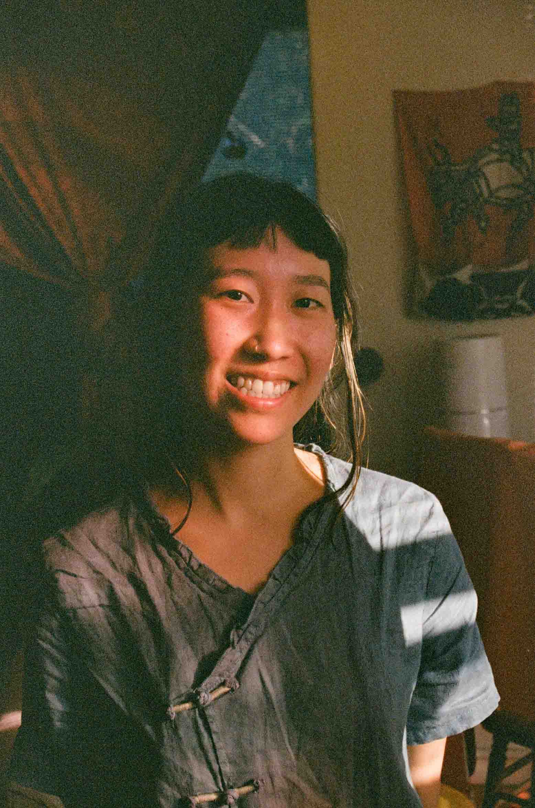

I am so glad to find you here. My name is Whitney and I am a non-binary Chinese bodyworker who grew up in New Jersey. I attended university in Boston and eventually relocated to the East Bay where I reside with my partner. I have been practicing massage since I was a child, working on family members, specifically my mother who had chronic lower back pain. As I grew older, I realized that my body intuition could be helpful to others, especially those who historically have not had access to bodywork or may feel unsafe in a conventional massage environment. I specialize in deep tissue work and trigger point release. My work has often been described as "precise; methodical; intentional." You can find detailed reviews here. Specialty areas of the body I work on include the glutes, hip flexors, chest, diaphragm, neck, and face / head. My practice draws from both Western and Eastern modalities, and I am greatly influenced by Traditional Chinese Medicine. I use cupping and gua sha in my practice per request, and am currently practicing Thai massage in my own time to eventually incorporate into my work. I completed the 800 hour core program at National Holistic Institute in June 2023. Since receiving my certification, I have worked with hundreds of clients from all different backgrounds and thoroughly enjoy meeting and working with each individual. It is a great pleasure and honor to be trusted by my community. I am also a Reiki master and completed my certification in July of 2024. Reiki is a Japanese form of energy work in which the practitioner channels universal life force through them into the client, to aid the client in healing various ailments, from stress to emotional distress to physical issues. If you are curious about Reiki and want to learn more, feel free to contact me. Gentle Tiger Bodywork was borne from my desire to provide a holistic, safe, and affordable healing space for all people, especially LGBTQIA+ people of color. I like to get to know my clients on a deeper level so long as they feel comfortable sharing, in order to provide a well-informed & customized care plan to address issues they may be facing. The body, mind, and spirit are connected and I aim to facilitate healing across all these aspects of an individual. My practice deeply relies on clear communication, transparency, and collaboration. I remind you that I am not the healer, you are. I will do my best to assist you on your healing journey and ease your tensions and pains, but ultimately you must be willing to do the work which is required for healing. Seeking bodywork is a great first step in caring for yourself, so I applaud you for that! Let's work together to address your body care. Feel free to explore my website, especially the "Helpful Resources" link!
How you can contact me
- Text
- (510) 737-4330
- Call
- (510) 737-4330
- gentletigerbodywork@gmail.com
- Where?
- Emeryville • California • USA
- Personal Website
- whitneyx.info